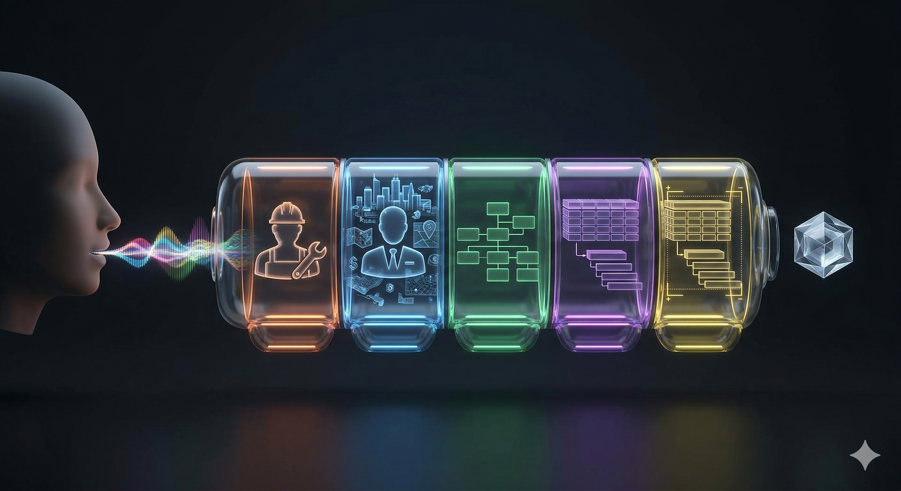

neovida.ai / ИИ. Новая реальность
Промпт-инженерия
от А до Я
Занятие 2 · 28 апреля 2026
Сегодня вы научитесь
1
Писать промпты по формуле РКЗФО
2
Использовать 6 мощных техник
3
Понимать «память» ИИ и работать с ней
4
Создавать промпты голосом
5
Готовить фундамент для ИИ-ассистента

Что такое промпт?
📝 Простыми словами
Промпт — это инструкция для ИИ. Текст, который вы пишете или говорите нейросети. Как задание для сотрудника — только сотрудник искусственный.
🔑 Почему это важно
ИИ не читает мысли. Он делает ровно то, что вы написали. Плохая инструкция → плохой результат. Хорошая инструкция → отличный результат. Всё решает промпт.
💬
Текст
напечатали
напечатали
🎤
Голос
наговорили
наговорили
📷
Фото
показали
показали
📄
Файл
загрузили
загрузили
Промпт = ваш единственный способ общения с ИИ. Научитесь формулировать — и ИИ станет в 10 раз полезнее.
Без ТЗ = результат ХЗ
Плохой промпт
Напиши текст про мои услуги
Хороший промпт
Ты маркетолог. Описание услуги онлайн-консультации для сайта. Цена от 3 000 руб. Аудитория: предприниматели. Структура: заголовок, боли, выгоды, призыв. 200 слов. Тон экспертный.
Как вы ставите задачу сотруднику, так и ставите задачу ИИ
Формула
Р К З Ф О
5 элементов идеального промпта
Формула РКЗФО
Р
Роль
Кем должен быть ИИ
К
Контекст
Фон, ситуация
З
Задача
Что сделать
Ф
Формат
В каком виде ответ
О
Ограничения
Чего НЕ делать
Минимум: Роль + Задача + Формат
Почему Роль решает всё
Без роли
ИИ даёт «ответ из Википедии»
Общий, поверхностный, без нюансов
С ролью
ИИ даёт «консультацию эксперта»
Терминология, нюансы, структура профи
«Ты [профессия] с [X]-летним опытом в [область]»
Ваши роли и запросы
Шаг 1: отправьте запрос БЕЗ роли · Шаг 2: добавьте роль в начало · Шаг 3: сравните ответы
| Кто вы | Пример запроса (Шаг 1) | + Роль (Шаг 2) |
|---|---|---|
| Регина HoReCa | «Помоги составить план улучшения гостевого сервиса в ресторане за 30 дней» | Ты опытный директор отеля и ресторана с 15-летним стажем в HoReCa |
| Павел digital + недвижка | «Составь стратегию запуска нового digital-направления и привлечения первых 5 клиентов» | Ты digital-стратег с опытом инвестирования в коммерческую недвижимость |
| Дмитрий B2B-сервис | «Как сократить время реакции сервисной службы вдвое и удержать клиентов?» | Ты руководитель сервисной B2B-компании по ремонту оргтехники, 50+ человек |
| Элина личный бренд | «Напиши план постов в блог на месяц для роста личного бренда коуча» | Ты эксперт по личному бренду и коучингу, ведущий блог в соцсетях |
| Ленар консалтинг | «Помоги составить коммерческое предложение клиенту на проект Deep Research» | Ты опытный бизнес-консультант, специалист по стратегии и Deep Research |
| Ритфаль производство | «Как масштабировать B2B-продажи противопожарных дверей застройщикам и подрядчикам?» | Ты директор производства противопожарных дверей, 16-50 человек |
💡 Лайфхак: сначала отправьте только запрос → получите общий ответ. Потом скопируйте тот же запрос, в начале добавьте роль → сравните глубину
Блок 2
6 техник
Которые делают промпты мощнее
Техника 1
Обратный промптинг (покажи пример)
Нашли что-то, что вам нравится? Попросите ИИ извлечь из этого промпт. Картинку, текст, стиль письма — ИИ разберёт на составляющие и соберёт промпт, который воспроизведёт это.
5 способов обратного промптинга
📸 Картинка → промпт
Нашли красивое фото? Скиньте ИИ: «Опиши это изображение максимально подробно, сделай из описания промпт для генерации похожего»
📝 Стиль блогера → ваши посты
Скопируйте 3-5 постов человека, который вам нравится: «Проанализируй стиль этих текстов. Извлеки тон, структуру, приёмы. Теперь напиши пост о [моя тема] в этом стиле»
📧 Удачное письмо → шаблон
Нашли письмо, которое сработало? «Разбери это письмо: тон, структура, приёмы убеждения. Сделай из этого шаблон для моих писем клиентам»
🌐 Сайт конкурента → свой
Скриншот сайта конкурента: «Опиши дизайн, структуру, тексты этого сайта. Сделай промпт для создания похожего, но для моего бизнеса»
📄 Хорошее КП → формула
Вставьте удачное коммерческое предложение: «Извлеки структуру, логику убеждения, формат. Сделай шаблон, чтобы я мог делать такие же КП для других клиентов»
⚡ Практика: Обратный промптинг
5 минут — попробуйте один из вариантов
1️⃣ Найдите в телефоне пост, фото или текст, который вам нравится
2️⃣ Отправьте его в ChatGPT или Gemini
3️⃣ Напишите: «Проанализируй это. Извлеки стиль, структуру, приёмы. Сделай промпт, чтобы я мог создавать такое же для своей работы»
4️⃣ Используйте полученный промпт — создайте что-то своё в этом стиле
Это работает с чем угодно: фото, тексты, письма, дизайн, презентации, даже голосовые

Техника 2
Рассуждай пошагово
Волшебная фраза: «Рассуждай пошагово». ИИ показывает ход мысли. Как бухгалтер, который показывает расчёт.
Пошаговое мышление для каждого
Регина (HoReCa): Стоит ли запускать второй ресторан в Уфе?
Пошагово: спрос, локация, инвестиции, окупаемость, риски персонала.
Павел (digital + недвижка): Куда вложить 5 млн — в digital-агентство или коммерческую недвижимость?
Пошагово: ROI, риски, ликвидность, горизонт, маржа.
Дмитрий (B2B-сервис): Как сократить время реакции сервисной службы вдвое?
Пошагово: процесс сейчас, узкие места, инструменты, обучение, замер.
Элина (личный бренд): Как поднять чек за коучинг и расширить аудиторию блога?
Пошагово: позиционирование, ниша, кейсы, оффер, переговоры.
Ленар (консалтинг): Как продать клиенту проект Deep Research на 500к+?
Пошагово: ценность, методология, риски, кейсы, контракт.
Ритфаль (производство): Как масштабировать производство противопожарных дверей на +30%?
Пошагово: спрос, мощности, поставщики, команда, риски.
⚡ Практика: Пошагово
3 минуты — попробуйте прямо сейчас
1️⃣ Возьмите любой рабочий вопрос, где нужен развёрнутый ответ
2️⃣ Добавьте: «Рассуждай пошагово»
3️⃣ Перечислите 3-5 шагов, по которым нужно пройти
4️⃣ Оцените — ответ стал глубже?
Примеры шагов: закупка → конкуренты → расходы → маржа → итог

Техника 3
Усиль ответ
Получили результат? Не останавливайтесь. Три приёма, чтобы сделать любой ответ ИИ в разы лучше.
Три приёма усиления
👥 Три эксперта
«Ответь на этот вопрос от лица трёх специалистов: маркетолога, финансиста и практика с опытом. Пусть каждый даст свою оценку и они обсудят между собой.»
Когда: принимаете решение, выбираете стратегию, оцениваете идею
😈 Адвокат дьявола
«Теперь раскритикуй свой же ответ. Найди 5 слабых мест, рисков и причин, почему это может не сработать. Будь максимально жёстким.»
Когда: проверяете план, ищете слепые зоны, готовитесь к возражениям
🎯 Адаптируй
«Перепиши этот же текст для трёх аудиторий: для клиента, для инвестора и для сотрудника-новичка. Сохрани суть, измени подачу.»
Когда: один контент для разных людей, презентации, письма, посты
Один запрос → три приёма → результат, который не стыдно показать.
⚡ Практика: Усиль ответ
5 минут — возьмите любой предыдущий ответ ИИ
1️⃣ Откройте любой чат, где ИИ уже дал вам ответ
2️⃣ Напишите: «Ответь на это от лица 3 экспертов: [кто, кто, кто]»
3️⃣ Потом: «Теперь раскритикуй — найди 5 слабых мест»
4️⃣ Потом: «Перепиши для [другая аудитория]»
Каждый приём можно использовать отдельно — не обязательно все три сразу

Техника 4
Итерации + Запреты
Первый ответ — это черновик. Дальше правите в диалоге.
Фразы для итераций
Хорошо, но сделай короче
Измени тон на более дружелюбный
Это не то. Я имел в виду...
Дай 3 варианта с разным тоном
НЕ используй канцеляризмы
НЕ используй слово «уникальный»
Техника 5
«Задай мне вопросы»
ИИ спросит про бюджет, аудиторию, сроки — о чём вы сами не подумали.
Как это работает
Я хочу [задача].
Задай мне 10 уточняющих вопросов,
прежде чем начинать.
ИИ задаёт вопросы → вы отвечаете → ИИ сам строит идеальный промпт из ваших ответов.
«Задай мне вопросы» для каждого
Регина (HoReCa): Хочу запустить программу лояльности для постоянных гостей отеля.
Задай мне 10 уточняющих вопросов, прежде чем составлять план.
Павел (digital): Хочу запустить новое digital-направление и привлечь первых 5 клиентов.
Задай мне уточняющие вопросы.
Дмитрий (B2B-сервис): Хочу внедрить ИИ-ассистента для приёма и сортировки заявок.
Задай мне вопросы, чтобы построить лучшую архитектуру.
Элина (личный бренд): Хочу запустить платный курс по построению личного бренда.
Задай мне 10 вопросов прежде чем писать программу.
Ленар (консалтинг): Хочу автоматизировать подготовку клиентских отчётов через Deep Research.
Задай мне вопросы.
Ритфаль (производство): Хочу настроить отдел продаж на B2B-производстве для масштабирования.
Задай мне вопросы.
⚡ Практика: Задай вопросы
3 минуты — самая мощная техника
1️⃣ Напишите: «Я хочу [ваша реальная задача]»
2️⃣ Добавьте: «Задай мне уточняющие вопросы, прежде чем начинать»
3️⃣ Ответьте на вопросы ИИ
4️⃣ Оцените результат — стал ли ответ точнее?
ИИ сам спросит про бюджет, аудиторию, сроки — о чём вы бы не подумали
Перерыв
10 минут
Блок 3
Память ИИ
Почему ИИ «тупеет» в длинных чатах
Контекстное окно
У ИИ есть «стол», на который он раскладывает ваш разговор. Стол конечный.
Бесплатный ChatGPT
~100 страниц
контекстного окна
ChatGPT Plus / Gemini Pro
~500 страниц
контекстного окна
⚠️ Когда «стол» заполняется, ИИ начинает сбрасывать старые «листки» и забывать. Поэтому в длинных чатах он «тупеет».
«Гниение посередине»
Исследование Стэнфорда
Начало
Помнит хорошо
Середина
Теряет
Конец
Помнит хорошо
ИИ лучше всего помнит начало и конец. Середину теряет.
Правило 1: Ключевое в начало и конец
Для длинных промптов (10+ строк)
Неправильно
Ты маркетолог.
Мой бизнес — консалтинг...
5 сотрудников, офис...
ЦЕНЫ ТОЛЬКО В РУБЛЯХ
Клиенты — малый бизнес...
Напиши текст.
Правильно
ЦЕНЫ ТОЛЬКО В РУБЛЯХ
Ты маркетолог.
Консалтинг, 5 лет на рынке...
5 сотрудников, офис...
Напиши текст.
Напоминаю: РУБЛИ
Правило 2: Структурируйте — нумеруйте
Стена текста
Мне нужен пост для инстаграма про мои услуги он должен быть не длинный примерно 100 слов с эмодзи с призывом записаться тон дружелюбный...
Нумерованный список
1. Длина: ~100 слов
2. Эмодзи: да, умеренно
3. Тон: дружелюбный
4. Упомянуть:
- Первое занятие бесплатно
- Группы до 6 человек
5. Призыв записаться
Правило 3: Новый чат = чистая память
Когда новый чат
✓ Сменили тему
✓ Чат длиннее 15-20 сообщений
✓ ИИ начал «тупить»
✓ Хотите новую задачу
Когда НЕ надо
✗ Правите один и тот же текст
✗ В середине пошаговой задачи
✗ ИИ задал вам вопросы
Одна задача = один чат
Правило 4: Резюмируйте в длинных диалогах
Давай подведём итог:
1. Мы составляем контент-план для Telegram-канала
2. Остановились на 3 рубриках: «Кейс недели»,
«Совет дня», «Закулисье»
3. Бюджет на продвижение до 15 000 руб/мес
Теперь сделай макет поста для «Кейс недели».
Напоминаете ИИ всё важное. Как после обеда: «Так, мы остановились на том, что...»
Блок 4
Практика
Пишем промпт для своей работы по формуле РКЗФО
Полный пример: РКЗФО
Р: Ты маркетолог-стратег с 10-летним опытом в digital.
К: У меня онлайн-школа по фитнесу. 500 подписчиков в Telegram,
средний чек 3 000 руб. Запуск нового курса через месяц.
З: Предложи 5 идей для прогрева аудитории перед запуском.
Ф: Таблица: идея, канал, бюджет, срок, ожидаемый охват.
О: Бюджет до 30 000 руб. Без спам-рассылок.
Только Telegram и Instagram.
⚡ Практика: пишем свой промпт
7 минут — главное упражнение урока
1️⃣ Возьмите реальную рабочую задачу — то, что вам нужно сделать на этой неделе
2️⃣ Напишите промпт по формуле: Роль + Контекст + Задача
3️⃣ Добавьте Формат (таблица, список, текст) и Ограничения
4️⃣ Отправьте в ChatGPT или Gemini → оцените результат
5️⃣ Не нравится? Итерируйте! «Сделай короче», «Измени тон», «Добавь...»
Если затрудняетесь — поднимите руку, поможем

Техника 6
Мета-промпт
Приём, при котором вы даёте ИИ сырую идею или задачу в свободной форме, а затем просите его самостоятельно превратить это в структурированный, грамотный промпт, готовый к использованию.
Мета-промпт: как это работает
Вы не пишете промпт сами. Вы просите ИИ написать его за вас.
🍳 Аналогия
Вы не готовите блюдо сами — вы объясняете повару, какой рецепт написать. Повар пишет рецепт, вы проверяете, и говорите: «Теперь готовь по нему.»
🔄 Как это выглядит
Описываете задачу своими словами — хоть голосом, хоть набросками. Потом говорите: «Собери из этого правильный промпт с ролью, контекстом, задачей и форматом.» ИИ сам выстраивает структуру и выдаёт готовый промпт.
1
Вы наговорили задачу как получится — хоть 3 предложения, хоть абзац
2
Попросили: «Сделай из этого промпт по РКЗФО»
3
ИИ выдал готовый промпт — проверили, отправили
Мета-промпт — это промпт для создания промпта. Вы думаете о задаче, а ИИ думает о формулировке.
⭐ Супертехника
Наговори голосом
Формула РКЗФО — это база. Вы должны понимать, что входит в хороший промпт. Но запоминать и писать вручную не обязательно — просто расскажите ИИ голосом что нужно, а он сам упакует это в идеальный промпт.
Как это работает
Два шага — и готово
🎤 Шаг 1: наговорите голосом
Просто расскажите что вам нужно. Как другу. 3-4 предложения. Не думайте про формулу — просто говорите.
🤖 Шаг 2: скажите ИИ
«Упакуй мою мысль в промпт по формуле РКЗФО. Примени все правила промпт-инженерии. Выполни получившийся промпт.»
💡 Почему это супертехника: вам не нужно помнить формулу, не нужно думать про роль и формат — ИИ сам всё определит из вашего рассказа. Вы просто говорите — он делает.
Что ИИ сделал сам
Из вашего рассказа голосом он автоматически:
Р
Определил роль — понял, какой специалист нужен
К
Вытащил контекст — ваш бизнес, город, ситуацию
З
Сформулировал задачу — чётко, конкретно
Ф
Выбрал формат — таблица, список или текст
О
Добавил ограничения — и сразу выполнил!
Вся формула РКЗФО — автоматически. Вы просто поговорили.

Фразы-усилители
Добавляйте эти инструкции в любой промпт, чтобы получить результат лучше. Не обязательно все сразу — выбирайте те, которые подходят к задаче.
15 фраз, которые усиливают промпт
1. «Если не знаешь ответа — скажи прямо, не выдумывай»
2. «Если не уверен — перепроверь, не давай ответ наугад»
3. «Отвечай развёрнуто, не сокращай ради краткости»
4. «Если мало контекста — сначала задай вопросы, потом делай»
5. «Не додумывай за меня — если чего-то не хватает, спроси»
6. «Если я указал на ошибку — не спорь, исправь»
7. «Не уходи в сторону, делай ровно то, что просят»
8. «Учитывай всё, что я уже сказал выше в диалоге»
9. «Если моя идея слабая — скажи честно, будь критичным»
10. «Если видишь, как сделать лучше — предложи свой вариант»
11. «Качество важнее скорости, если я не сказал иначе»
12. «Не повторяй одну мысль разными словами ради объёма»
13. «Разделяй факты и мнения — обозначай, где рекомендация»
14. «Один ответ — одна задача. Не мешай в кучу»
15. «Начинай с главного вывода, потом объясняй»
🎨 Температура: Хочешь креатив — «будь смелее, предложи нестандартное». Хочешь точность — «строго по фактам, без фантазий».
Следующий уровень
Ассистентный
подход
подход
От разовых промптов к постоянному помощнику
Сегодня vs Следующий уровень
Сегодня: разовый промпт
Каждый раз пишете:
Роль + Контекст + Задача
Роль + Контекст + Задача
Каждый раз объясняете
кто вы и чем занимаетесь
кто вы и чем занимаетесь
Следующий уровень: ассистент
Один раз настроили.
ИИ уже знает вас, ваш бизнес,
ваших клиентов.
ваших клиентов.
Просто пишете задачу.
Ваши будущие ассистенты
| Кто вы | Ассистент |
|---|---|
| Регина | Гостевой сервис: брони, отзывы, меню, обучение персонала |
| Павел | Digital-команда: лиды, лендинги, аналитика рынка недвижимости |
| Дмитрий | Сервисная служба: заявки, диагностика, скрипты для мастеров |
| Элина | Контент-фабрика: посты, рилсы, программы коучинга, рассылки |
| Ленар | Аналитик: Deep Research, фреймворки, презентации клиентам |
| Ритфаль | Отдел продаж + производство: КП, тех.листы, нормоконтроль |
На следующем занятии создадим каждому
5 главных ошибок новичков
| Ошибка | Плохо | Хорошо |
|---|---|---|
| Размытый запрос | «Напиши текст про мои услуги» | «Описание услуги консультации, 150 слов» |
| Всё в одном | «Бизнес-план + окупаемость + презентация» | Разбить на 3 запроса |
| Нет контекста | «Какую цену поставить?» | «Закупка 450, конкуренты 700-900» |
| Первый = финальный | Скопировал, использовал | Оценил, улучшил, проверил |
| Не проверяет факты | «ИИ написал = правда» | Цифры, законы, даты проверять |
Следующее занятие — суббота
Ассистентный
подход
подход
Gems, NotebookLM, персональные ИИ-ассистенты
из ваших рабочих процессов.
из ваших рабочих процессов.
neovida.ai / ИИ. Новая реальность
Спасибо!
В понедельник ждите первое домашнее задание.
Вопросы? Пишите в чат 💪
Вопросы? Пишите в чат 💪